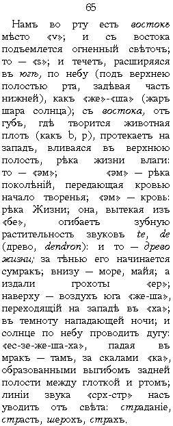
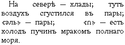
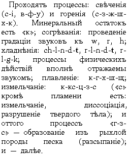
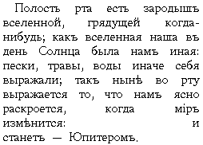
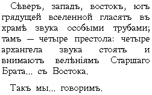

Glossolalia (Section 65)
GLOSSOLALIA

The east in our mouth is the place "v"; and from the east arises a fiery luminary; that is -- an "s"; and it flows, expanding in the south, along the palate (beneath the upper cavity of the mouth, touching part of the lower one), as "zh"-"sh" (the ashen heat [zhar] of the sphere-shape [shar] of the sun); from the east, from the lips, where the animal flesh is being created (as b, p) there it flows west, spilling into the upper cavity, the river of life of moisture: this is -- "m"; "m" is -- the river of generations, transferring by blood the beginning of creation; "m" is -- blood: the river of Life; it, flowing out from "b", bends around the dental growth of sounds t, d (tree [drevo], dendron): and this is -- the tree of life; beyond its shadow dusk begins; below is -- a mare [morye], maya; and in the distance the rumblings of "r"; on the top is -- the air of the south "zh-sh", transiting in the west into "kh"; into the darkness of the falling night; and the sun forms an arc in the sky: "s-z-zh--sh-kh," falling into the murk -- there, beyond the cliffs "k," formed by a bend of the rear cavity between the throat and mouth; the lines of the sound "srkh-str" lead us away from the light: struggling [stradanie], straining [strast'], coarse [sherokh], fear-struck. [strakh].

In the north are -- the coldies; here the air has thickened into steams [coldstreams]; "l" is -- steam; "n" is -- the cold of abysses from the murk of the full mare.

Processes proceed: illuminating (s-i, v-f-u) and burning (s-z-zh-sh-kh-k). What remains of minerals is "k"; as they are heated: the carrying out a gradation of sounds to w, r, h; as they are cooled: ch-l-n-d-t, r-l-n-d-t, r-l-g-k; the processes of physical actions are fully reflected by sound; fluidity: k-g-kh-sh-shch; shrinking: k-ks-ts-z-s ("s" besides being a flame is the shrinking, disassociation, destruction of the firm body) and thence the process "g-z-s" is -- the formation of sand from porous stone (disintegration); and -- so forth

The cavity of the mouth is the germ/embryo of the universe, which will someday come to be; just as our universe on the day of the Sun was different: sands, grasses, waters expressed themselves differently; so today in the mouth is expressed that, which will clearly reveal itself to us, when the world will be amended: and it will become -- Jupiter.

North, west, east, south of the coming universe sound to us in the cathedral of sound with special trumpets; there are -- four thrones: four archangels of sound stand and heed the commands of the Older Brother . . . from the East.
This is how we. . . speak.